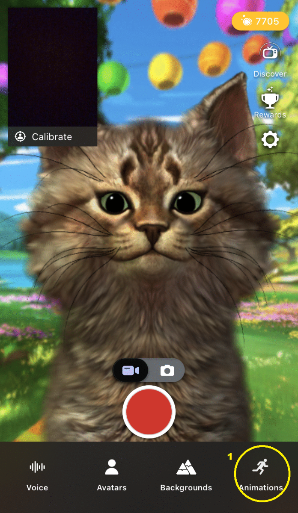

Animaze iPhone: What are the animations and special poses?

In Animaze you can animate your avatar with special actions and special poses. Special poses are available for some 2D avatars.
1. To use an animation tap on the icon to bring up the animations menu.
-
There will be more or fewer animations available, depending on the avatar.
2. Tap on one of the available animations.
PRO TIP: animations can also be used while recording a video.